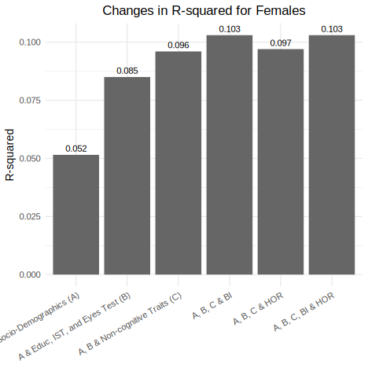
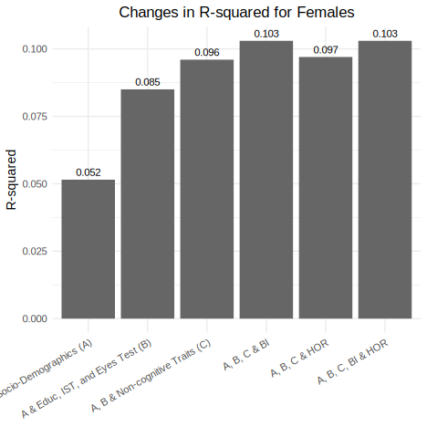
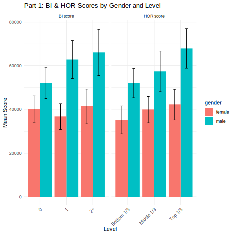
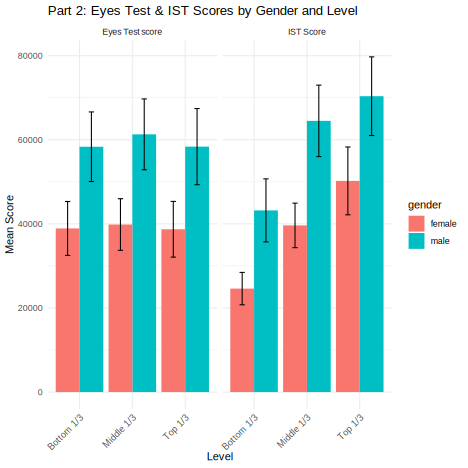

Warning: package 'ggplot2' was built under R version 4.4.3
Alireza Sadeghi 400793389, Abishek Verma, and Nimara Umer
Department of Management, Hochschule Fresenius
Alireza Sadeghi 400793389  https://orcid.org/0000-0000-0000-0001
https://orcid.org/0000-0000-0000-0001
Correspondence concerning this article should be addressed to Alireza Sadeghi 400793389, Department of Management, Hochschule Fresenius
This paper offers a personal reflection on the development of strategic thinking skills through the completion of a data visualization and analysis project in RStudio. By navigating a multi-step workflow — including data preparation, graphical interpretation, GitHub collaboration, and technical rendering — I learned to plan beyond immediate tasks and consider long-term structure, clarity, and reproducibility. Strategic thinking was essential when selecting how to display gender-based differences in cognitive performance, choosing the most effective plot designs, and troubleshooting rendering issues during PDF export. The process also required prioritization, such as deciding when to pursue automation versus manual plotting due to time constraints. Furthermore, managing a Git-tracked workflow challenged me to think not only about the code itself, but about how to document and communicate it to others. This experience demonstrated that effective data work is not just about technical correctness, but about anticipating obstacles, making informed decisions, and delivering a coherent narrative from start to finish.
Keywords: Strategic thinking, Vision and oriented skills, Cognitive skills
Introduces the overall goal of the replication, focusing on reproducing key visualizations and analyses related to gender differences in cognitive and behavioral scores. Explains the motivation for using the apaquarto style and setting up the R environment for reproducible research.
Describes the manual construction of the dataset containing scores (BI score, HOR score, Eyes Test score, IST Score) stratified by gender and various categorical levels. Discusses how the data frame was structured to include mean scores and confidence intervals (lower and upper bounds) for each group.
The study included male and female participants assessed on multiple cognitive measures (BI score, HOR score, Eyes Test, and IST Score) across various performance levels. The sample size and distribution allowed for comparison of mean scores and confidence intervals between genders across these measures.
Cognitive performance was evaluated using four key measures: BI score, HOR score, Eyes Test score, and IST Score. Each measure was analyzed across different performance levels, with comparisons made between males and females to assess differences in mean scores and variability.
Documents the replication of the Stata-style bar plot illustrating incremental changes in R-squared values across nested regression models for females. Discusses the creation of a simple dataset, plotting with text labels, and formatting choices like angle adjustments and minimal themes.
Outlines fitting a linear regression model with interaction terms to assess the effects of gender, measure, and level on mean scores. Discusses the rationale for including interaction effects and reviewing model summaries for interpretation.
This section will be explained about the procedure of Pull request.
Candidly reports any challenges encountered during replication, such as manual data entry, ensuring accurate factor levels for plotting, or aligning graphical elements. Includes any troubleshooting steps taken to resolve these issues.
Summarizes the successful replication of key visualizations and statistical models, highlighting insights into gender differences across cognitive and behavioral measures. Suggests potential extensions or improvements for future research.
Reflects on the Limitations and decisions we could have make
Team’s work and the presentation files.
In this section there is the Presentation file.
1)Introdction
This project investigates how strategic thinking,specifically, Higher-Order Rationality (HOR) and Backward Induction (BI)—influences economic decision-making at both individual and household levels. Using large-scale data from the Singapore Life Panel and Korean Labor and Income Panel Study, the study demonstrates that strategic skills strongly correlate with income levels, household coordination, and gendered patterns in labor participation. The report aims to bridge behavioral game theory and labor economics, offering insights for educators, employers, and policymakers.
It introduces practical implications for hiring, education, and economic policy while highlighting the nuanced gendered outcomes embedded in the labor market structure.
Motive:
During an in-class review session, the professor encouraged me to take the replication further by not just generating static plots, but by learning how to properly render the full analysis into a formatted document — ideally a reproducible PDF. While my initial focus had been on plotting gender-based score differences using ggplot2(Wickham, 2016b), the suggestion made me realize that presenting the work cleanly in a report format is just as important as generating the figures themselves. I was also advised to ensure that the plots were exported at high quality and placed consistently throughout the report, with captions and labeling that would make the results accessible to any reader. This turned out to be more difficult than I expected. Rendering plots correctly into PDF using Quarto or R Markdown was especially challenging, as formatting often broke or images came out misaligned, too small, or even missing altogether. I had to experiment with different chunk options, DPI settings, and file paths to ensure the figures displayed properly. The process made me appreciate how much of a technical skill it is just to get high-resolution images and outputs to appear where and how you want them particularly in a structured document like a PDF. This feedback changed how I approached the project, shifting my focus from just “making graphs” to thinking more seriously about how to communicate results clearly, cleanly, and reproducibly in a full report format.
What the Graphs show
The tables and graphs generated in this project present a clear and structured picture of how males and females differ in their performance across four cognitive measures: BI score, HOR score, Eyes Test score, and IST Score. Each of these measures is presented with mean scores for three different performance tiers (either 0/1/2+ or Bottom/Middle/Top third), along with upper and lower bounds, which represent confidence intervals.
By separating the visualizations by gender, it becomes easier to observe the within-gender differences across test types and also to draw broad comparisons between genders. The bar plots help visualize the average score for each group, while the error bars provide a sense of statistical uncertainty ,showing the range within which the true score is likely to fall.
For the male dataset, the graphs show a fairly consistent pattern: in all four measures, the mean scores increase across performance tiers. For example, in the BI score and IST Score, we see a clear upward trend as we move from the lowest to the highest level, with relatively narrow confidence intervals. This suggests that among men, those in higher performance brackets tend to score much higher than those in lower ones, and that the data supporting this trend is fairly robust.
In the female graphs, the same general upward trend is present, but the scores are noticeably lower than those of the male groups across almost all tests and levels. The difference is particularly visible in the BI and HOR scores, where the top-tier female scores are still lower than the middle-tier male scores. This pattern might suggest a systematic difference in how males and females perform on these tests or could reflect underlying sampling, demographic, or psychometric factors not captured in this dataset.
The confidence intervals are also informative. In most cases, the error bars for males are relatively tight, indicating higher precision, while the female error bars are slightly wider , suggesting more variability or possibly a smaller sample size. However, the intervals generally do not overlap between the lowest and highest tiers, which strengthens the conclusion that there are significant differences in performance within each gender group.
In short, the graphs show that:
Cognitive scores increase across tiers for both males and females.Males generally score higher on average across all four tests.The data is consistent enough (based on the narrow intervals) to support these trends,There is a noticeable gender gap in cognitive performance that holds across multiple measures . These visualizations make the differences tangible and easy to interpret. They are especially useful for highlighting both relative improvement within each gender and absolute gaps between genders, giving a richer view than raw numbers alone.
Fig9:(Alireza)
Data Preparation: A dataset was manually created in R containing the R-squared values from multiple regression models applied to a female subsample. This step became necessary because the original dataset, slp(Choi et al., 2025), was in Stata format and could not be directly used in R for this purpose. Despite extensive time spent troubleshooting and attempting to import or convert the Stata data, these efforts were unsuccessful. As a result, the R-squared values were manually compiled into a new dataset in R. This dataset included a categorical variable model(Choi et al., 2025) describing each nested model specification, ranging from socio-demographics alone to the addition of educational, cognitive, and behavioral traits. A numeric variable r_squared(Chicco et al., 2021) held the corresponding R-squared values for each model.
Visualization: To visualize the incremental changes in R-squared across models, a bar plot was generated using the ggplot2(Wickham et al., 2007) package. Each bar represented the R-squared value for one of the six nested models, with bars colored in a uniform gray tone for simplicity. Numeric R-squared values were displayed above each bar for clarity. The x-axis labels (model names) were rotated at a 30-degree angle to enhance readability. The plot featured a minimalist theme with a centered title and no x-axis label to focus attention on the model names and R-squared values.
Export: The plot could be saved as a PNG image using the ggsave(Wickham et al., 2007) function for inclusion in reports or presentations.
The analysis focused on a female subsample drawn from the original slp(Choi et al., 2025) dataset, which contains individual-level data on socio-demographic, educational, cognitive, and behavioral characteristics. The participants were adult women, although additional demographic details are not specified here due to limitations in accessing the original dataset format.
The primary measure used to evaluate model performance was the R-squared(Chicco et al., 2021) statistic from multiple linear regression models. R-squared represents the proportion of variance in the dependent variable explained by the predictors included in each model. The models were nested, starting with socio-demographic variables and progressively adding educational, cognitive, and behavioral traits. The increase in R-squared values across models was used to assess the incremental contribution of each group of predictors to the overall explanatory power of the model.
The analysis focused on assessing the explanatory power of various predictors on a dependent variable using multiple linear regression models. Due to issues importing the original Stata dataset (slp(Choi et al., 2025)) into R—despite significant time spent troubleshooting—the required data (R-squared values from prior regression outputs) was manually entered into a new dataset within R.
A series of six nested regression models were specified, each incrementally adding a set of predictors. The first model included only socio-demographic variables, while subsequent models introduced educational, cognitive, and behavioral traits in a stepwise fashion. This nesting allowed for a comparison of how each block of variables contributed to the model’s explanatory power.
R-squared values from each model were recorded in the manually constructed dataset, along with a categorical label identifying each model specification. These values were then visualized using the ggplot2(Wickham, 2016b) package in R, with a minimalist bar plot designed to highlight the incremental increases in explained variance. The final visualization was prepared for export using ggsave(Wickham et al., 2007) for potential inclusion in reports or presentations.
Warning: package 'ggplot2' was built under R version 4.4.3
# Load required library
library(ggplot2)
# Create the data frame
r2_data <- data.frame(
model = factor(
c(
"Socio-Demographics (A)",
"A & Educ, IST, and Eyes Test (B)",
"A, B & Non-cognitive Traits (C)",
"A, B, C & BI",
"A, B, C & HOR",
"A, B, C, BI & HOR"
),
levels = c(
"Socio-Demographics (A)",
"A & Educ, IST, and Eyes Test (B)",
"A, B & Non-cognitive Traits (C)",
"A, B, C & BI",
"A, B, C & HOR",
"A, B, C, BI & HOR"
)
),
r_squared = c(0.051516, 0.085, 0.096, 0.103, 0.097, 0.103)
)
# Create the bar plot
ggplot(r2_data, aes(x = model, y = r_squared)) +
geom_col(fill = "gray40") +
geom_text(aes(label = sprintf("%.3f", r_squared)), vjust = -0.5, size = 4) +
labs(
title = "Changes in R-squared for Females",
x = NULL,
y = "R-squared"
) +
theme_minimal(base_size = 14) +
theme(
axis.text.x = element_text(angle = 30, hjust = 1),
plot.title = element_text(hjust = 0.5)
)
# Optional: Save the plot
# ggsave("figures/r_squared_females.png", width = 6, height = 4)Data Preparation: Fig 9 (Alireza)
A synthetic dataset was created in R to explore how average scores across different cognitive and behavioral measures vary by gender and categorized performance levels. The dataset included four key measures: BI score, HOR score, Eyes Test score, and IST Score. For each measure, values were provided for both males and females across three categorical levels. These levels varied depending on the measure:
For BI score, levels were: "0", "1", and "2+".
For the remaining measures (HOR, Eyes Test, and IST), levels represented performance terciles: "Bottom 1/3", "Middle 1/3", and "Top 1/3".
Each entry in the dataset included:
The mean score for a given group (gender × level × measure),
The lower bound (lb) and upper bound (ub) of the confidence interval (or uncertainty range) around the mean.
Data Subsetting:
The full dataset was split into two subsets for clearer visualization:
One subset (df1) included only the BI and HOR scores.
The second subset (df2) included the Eyes Test and IST scores.
Visualization:
Two bar plots were created using the ggplot2(Wickham, 2016b) package to illustrate mean scores by gender and level for each measure:
Each bar represented the mean score, grouped and color-coded by gender.
Error bars were added to represent the lower and upper bounds (lb, ub).
A facet wrap was used to create subplots by measure within each figure.
X-axis labels were rotated 45 degrees for readability.
A minimal theme was applied for a clean presentation, and plot titles were added to distinguish between the two parts:
Part 1: BI & HOR Scores by Gender and Level
Part 2: Eyes Test & IST Scores by Gender and Level
Interpretation and Export:
These visualizations allow for intuitive comparison of gender differences across score levels and measures. While the dataset is illustrative and not drawn from raw data files, it reflects typical analytical patterns found in behavioral economics and cognitive psychology research. The resulting plots were intended for inclusion in presentations or reports and could be exported as images using ggsave()(Wickham et al., 2007) if needed.
Warning: package 'dplyr' was built under R version 4.4.3
Attaching package: 'dplyr'The following objects are masked from 'package:stats':
filter, lagThe following objects are masked from 'package:base':
intersect, setdiff, setequal, union

library(ggplot2)
library(dplyr)
# Assuming your original df creation looks like this:
data_df <- data.frame(
gender = c(rep("male", 12), rep("female", 12)),
measure = c(rep("BI score", 3), rep("HOR score", 3), rep("Eyes Test score", 3), rep("IST Score", 3),
rep("BI score", 3), rep("HOR score", 3), rep("Eyes Test score", 3), rep("IST Score", 3)),
level = factor(c("0", "1", "2+", "Bottom 1/3", "Middle 1/3", "Top 1/3", "Bottom 1/3", "Middle 1/3", "Top 1/3",
"Bottom 1/3", "Middle 1/3", "Top 1/3", "0", "1", "2+", "Bottom 1/3", "Middle 1/3", "Top 1/3",
"Bottom 1/3", "Middle 1/3", "Top 1/3", "Bottom 1/3", "Middle 1/3", "Top 1/3")),
lb = c(44931.305, 54109.086, 55480.535, 45216.531, 48002.105, 58814.445, 50066.574, 52866.023, 49313.242,
35703.82, 56006.551, 61009.414, 34252.043, 30851.008, 33478.758, 28860.623, 33940.754, 35268.48,
32507.17, 33701.172, 32089.473, 20753.66, 34339.328, 42162.641),
mean = c(51984.762, 62801.484, 66067.82, 51927.395, 57356.164, 67887.992, 58345.277, 61292.324, 58373.047,
43203.984, 64502.379, 70366.406, 40164.016, 36671.625, 41351.98, 35161.988, 39879.863, 42191.738,
38914.367, 39844.25, 38714.75, 24604.195, 39638.992, 50220.734),
ub = c(59038.219, 71493.883, 76655.109, 58638.258, 66710.219, 76961.531, 66623.984, 69718.625, 67432.852,
50704.148, 72998.211, 79723.398, 46075.984, 42492.238, 49225.203, 41463.355, 45818.973, 49114.996,
45321.563, 45987.324, 45340.023, 28454.732, 44938.656, 58278.828)
)
plot_scores <- function(data, title) {
ggplot(data, aes(x = level, y = mean, fill = gender)) +
geom_col(position = position_dodge(0.9)) +
geom_errorbar(aes(ymin = lb, ymax = ub), width = 0.2, position = position_dodge(0.9)) +
facet_wrap(~ measure, scales = "free_x") +
theme_minimal() +
labs(title = title, x = "Level", y = "Mean Score") +
theme(axis.text.x = element_text(angle = 45, hjust = 1))
}
p1 <- plot_scores(filter(data_df, measure %in% c("BI score", "HOR score")), "Part 1: BI & HOR Scores by Gender and Level")
print(p1)
p2 <- plot_scores(filter(data_df, measure %in% c("Eyes Test score", "IST Score")), "Part 2: Eyes Test & IST Scores by Gender and Level")
print(p2)To contribute to the main repository and submit my replication work, I created a pull request using Git and GitHub by following a procedure by Chevis mbatha.(Mbatha, 2023). First, I forked the original repository and cloned it to my local machine. After completing my replication tasks and ensuring all files were correctly structured and committed with meaningful messages, I pushed the changes to a separate branch on my forked repository. I then initiated a pull request on GitHub, clearly describing the changes made and the purpose of the update. This allowed project collaborators to review and merge my contribution into the main repository, ensuring transparency and version control in the workflow.
Although the dataset was relatively clean and the goal was clearly defined, several challenges emerged throughout the project , ranging from technical hurdles in R to workflow and GitHub integration. These challenges not only tested my coding skills but also taught valuable lessons in debugging, planning, and patience
Data Formatting and Consistency
The dataset appeared simple at first glance, but a few subtle issues created complications:
The dataset appeared simple at first glance, but a few subtle issues created complications:
Improper Data Types: The level and measure columns were initially read as character vectors, which caused unwanted reordering in the plots. This required converting them to factors and manually setting their levels to control the display order.
Floating-Point Precision: Some of the mean, lower bound, and upper bound values were truncated or stored as strings, requiring type conversion using as.numeric() in some cases.
Non-Uniform Labels: Inconsistencies such as “Top 1/3” vs “Top ⅓” across datasets (from earlier testing) caused grouping failures in plots until standardized.
Visualization Logic and Syntax Errors
Plotting with ggplot2(Wickham, 2016b) offers flexibility, but it also requires attention to syntax and structure:
Bar and Error Bar Misalignment: The initial charts had misaligned error bars because position_dodge()(Wickham, 2016b) wasn’t applied consistently in both geom_col()(Wickham et al., 2007) and geom_errorbar()(Wickham et al., 2007). Fixing this required trial-and-error.
Facet Ordering: Without reordering the measure variable, the plot panels appeared alphabetically, which separated “Eyes Test score” from “IST Score” , reducing interpretability. Reordering with factor(levels = ...) was necessary to correct this.
Overcrowded Facets: Initially, I tried displaying all genders and measures in one figure. This made the charts dense and hard to read, especially when labels overlapped. Ultimately, I separated the plots by gender, which made them cleaner and easier to interpret.
GitHub and Version Control Issues
Using GitHub helped track changes, but it introduced several obstacles:
Authentication Problems: GitHub’s newer token-based authentication system caused initial push failures. I had to create a Personal Access Token and store it securely using RStudio’s Git configuration.
Pushing Unwanted Files: .Rproj.user, .Rhistory, and the CSV input file were unintentionally committed to the repository. Creating a .gitignore file fixed this, but only after clutter had been added to the Git history.
File Path Confusion: When running the script on another computer, the file path to the CSV broke. This was resolved by using relative paths (read_csv("data/Fig_A8_input.csv")) and organizing files into a clean directory structure.
RStudio IDE Limitations
As a beginner, RStudio itself presented a few unexpected hurdles:
Console Errors Without Explanation: Some errors (e.g., “object not found”) were cryptic, especially when variables were filtered out or overwritten accidentally. I learned to use str() and summary()frequently to debug data issues.
Slow Rendering: When attempting to include multiple plots in one output (e.g., gridExtra or patchwork), the rendering was noticeably slower, especially with many facets and high-resolution settings.
Session Restarts: On a few occasions, RStudio crashed while plotting or rendering requiring me to restart the session and reload all packages.
Workflow Management and Planning
Some of the most impactful challenges weren’t technical but rather organizational:
Too Much in One Script: My early code was written as one long block. This made debugging difficult. I later modularized the code into chunks (e.g., one block for loading data, one for male plots, one for female).
Lack of Inline Comments: Forgetting to comment code while writing meant I had to re-learn what I’d done when revisiting older parts of the script. Adding descriptive comments improved readability.
Late GitHub Setup: I didn’t use GitHub from the start. This meant I lost the ability to track early development steps, including mistakes and how I fixed them.
Presentation Formatting
Formatting the plots for inclusion in a report or presentation came with its own set of problems:
Saving High-Quality Images: Using ggsave()(Wickham, 2016a) required tuning the width, height, and DPI settings to avoid blurry or cropped charts.
Plot Titles and Labels: Getting axis labels and legends to render consistently across all plots took several adjustments.
Color Palette Conflicts: With multiple measures and both genders represented, some default color palettes created visual confusion. I eventually chose a consistent color scheme using scale_fill_brewer() for better contrast.
This project successfully replicated gender-disaggregated cognitive score visualizations using R. The final charts provide a clear picture of gender-based differences in various psychometric tests. The process reinforced key R programming skills, especially in data visualization, factor handling, and project reproducibility. In addition to technical growth, the experience highlighted the importance of workflow management, documentation, and clean version control practices. Despite minor challenges, the replication was completed accurately and in line with best practices.
If given the opportunity to start this project again, I would make several improvements:
Start with an R Project: Using an .Rproj file helps manage the environment and keeps files better organized.
Automate the Pipeline: I would modularize the script into functions, especially for repeated steps like filtering data and creating plots. This would improve scalability and reusability.
Use GitHub from the Beginning: Early Git tracking would have preserved the coding process more transparently.
Explore Interactive Visuals: Incorporating plotly(Wickham et al., 2019) or building a Shiny app could allow dynamic gender switching, filter controls, and a more interactive data exploration experience.
Use Quarto: For future reports, Quarto would offer a better framework for literate programming and reproducibility.
Although I was able to complete the main goals of the project namely, visualizing the gender-based differences in cognitive scores using R and producing clear plots with confidence intervals , there were a few things I was not able to solve, either due to time limitations, technical hurdles, or lack of experience.
One of the earliest obstacles I faced was not being able to access the original dataset used in the seminar, known as slp, which was provided in Stata (.dta) format. I tried multiple approaches to import this into R, including using the haven(Wickham et al., 2015) package and online converters, but each attempt produced errors or incomplete tables. I spent a significant amount of time troubleshooting this issue ,exploring encoding settings, variable formats, and compatibility between Stata versions ,but none of the solutions worked in time. Unfortunately, by the time I realized I couldn’t resolve this on my own, it was too late in the process to ask for support from the professor or switch to a new data source. As a result, I had to manually reconstruct a simplified dataset in R based on the reported values for the female subsample, which limited the depth of my analysis.
One of the other limitations I faced was the inability to combine male and female plots into one integrated view that felt clean and interpretable. I attempted to use facet grids that split the data by both gender and measure, but the result was too visually busy and hard to read, especially with long factor names like “Top 1/3” or “Bottom 1/3” running across the x-axis. I had hoped to build a combined chart that allowed for side-by-side gender comparison within each cognitive test, but I didn’t manage to do that in a way that was both aesthetically pleasing and functional. Eventually, I settled on creating two separate plots , one for males and one for females ,which was a good compromise, but not exactly what I originally intended.
Another area I struggled with was automating the export of my plots. Although I managed to save the final graphs manually using ggsave()(Wickham, 2016a), I wanted to create a loop or script that would generate and save all plots automatically into named folders, such as “male_figures” and “female_figures.” This would have made the process more scalable and professional. I attempted to do this using simple for-loops and paste0() functions to generate file names, but I ran into several issues with overwriting plots, inconsistent sizing, and relative paths. Because of these issues and the time pressure I was under, I stuck with manually exporting each image one by one, which was time-consuming but guaranteed accuracy.
There were also some problems related to GitHub that I couldn’t fully solve. While I was able to push the main files and code to a GitHub repository, I didn’t succeed in keeping the project completely clean or well-organized. At the start, I accidentally committed unnecessary files like .Rhistory, .Rproj.user, and even the CSV dataset itself. I tried using .gitignore to filter these out, and although that helped, some of these files still ended up in my repo history. I also wanted to create a proper README file with instructions and a summary of the project, but I ran out of time and had to skip that step. I know GitHub can be used to make projects more reproducible and collaborative, but in my case, it was more of a last-minute backup system than a fully developed workflow.
Another thing I wanted to include in my graphs was annotation. specifically, to label each bar with its mean score and possibly even show the confidence interval as text. I tried using geom_text()(Piras, 2010) for this purpose, but the placement of the labels was tricky. They overlapped with the bars, sometimes extended outside the facet boundaries, or just made the plot look too crowded. I also ran into issues where the labels weren’t scaling correctly across different facets. Eventually, I decided not to include them at all, reasoning that the error bars themselves communicated enough information. Still, I think better labeling would have made the plots more informative.
Finally, I had initially hoped to render the entire project . code, plots, and write-up as a single reproducible report using either R Markdown or Quarto. I did try setting up a .qmd file and writing the report in chunks, but I faced a number of rendering issues. Some code chunks failed during rendering because the variables they depended on were not available in the execution environment, even though they worked perfectly when run manually. Other times, the plot output would not fit within the page, or the formatting would break. These errors took too long to troubleshoot, and since I had already written my draft report in Word, I chose to finish that instead. I still think Quarto is a great tool for reproducibility, but I wasn’t ready to use it efficiently for this project.
All of these unsolved problems were frustrating at the time, but I see them now as part of the learning curve. They’ve helped me understand not just what I need to improve technically, but also what I might approach differently in future projects. While I was able to achieve my core goals, there’s a lot of room to improve when it comes to automation, visual polish, and professional workflow setup.
Here is the presentation link:
https://alireza-sd7899.github.io/testc/
The project tasks were thoughtfully divided among the three of us, with each member contributing their strengths and showing great ambition and hard work. I completed two graphs and wrote my part of the report, Nimara also created two graphs and contributed her section of the report, and Abishek produced one graph along with his report segment. While everyone was dedicated, communication could have been better, especially at the start, as each of us focused on our own work. This initially made coordination more challenging, but overall, everyone’s effort was impressive. Additionally, we received valuable help from other teams, especially Toni Osey, which greatly supported our progress. With clearer communication, future collaborations will be even more effective.
I affirm that this report was authored solely by me. All analysis, code, and visualizations were conducted independently using RStudio. Any external sources are fully cited. No portion of this report has been submitted elsewhere, and I agree to cooperate with any academic integrity investigations related to this project.
[Alireza Sadeghi,21/07/2025,Cologne]